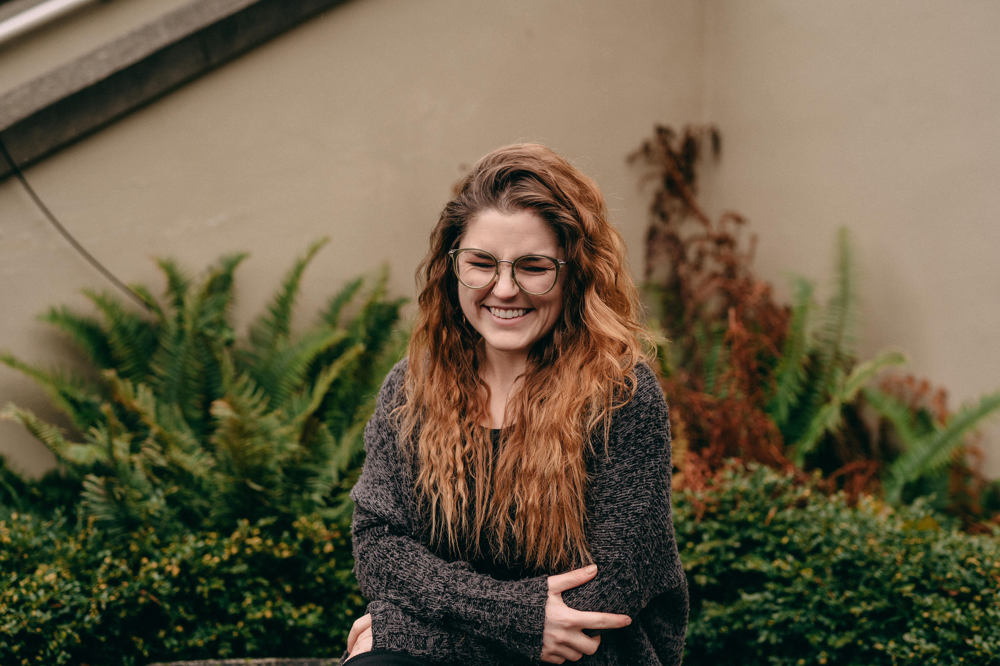
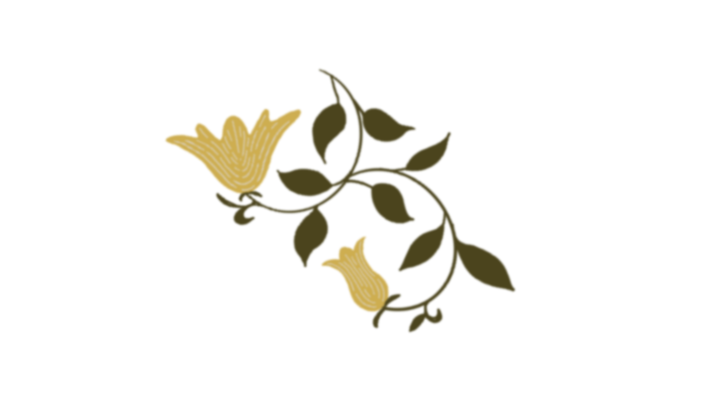
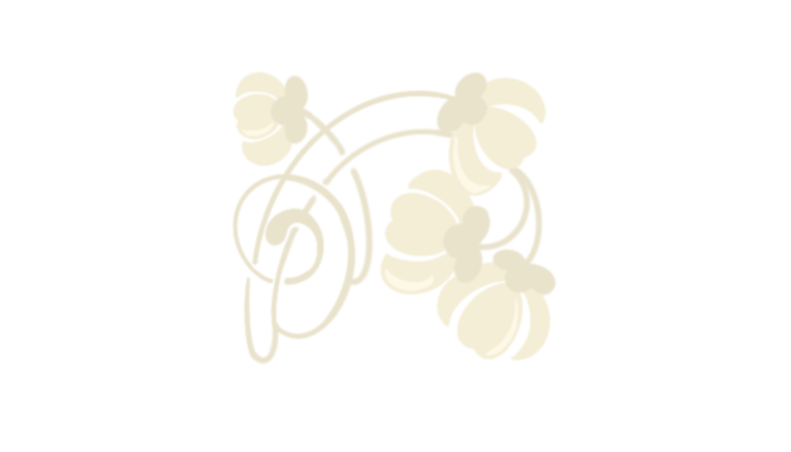

About Me
Rachel Schneider
I am a Master of Arts graduate with a passion for community, equity, and proactive change. Born and raised in Calgary, Alberta, I earned a Bachelor of Arts from the University of British Columbia (UBC) in 2017.
Driven by a desire to advocate for policies that increase the well-being of the underprivileged and underserved, I graduated from the University of Victoria in 2024 with a Master's in Cultural, Social and Political Thought.
I have dedicated much of my free time to my community. While attending UBC, I founded a debate club at Eric Hamber Secondary, a public high school in Vancouver. Over five years, I dedicated weekends and evenings to debate practice and tournaments, training 17 students to build their confidence and public-speaking skills. This experience, along with over 15 years of service, has developed an exceptional communication skillset, a calm demeanour, and the ability to engage thoughtfully on a wide array of topics.
Since graduating with my Master's, I have worked closely with people facing housing and food insecurity. As a Rotarian with the Rotary Club of Victoria Harbourside, I make breakfast weekly at Central Middle School and help deliver groceries monthly in our Food for Seniors program. In the summer of 2026, I was elected as the Chair of the Youth Committee at my Rotary club. In this role, I oversee and administer the scholarship and international exchange programs sponsored, in part, by my Rotary Club.
I am an incredibly kind, passionate, and detail-oriented individual with a proactive approach to problem-solving. Fluent in both French and English, I am committed to effecting positive change and am eager to contribute my skills to collaborative efforts.
